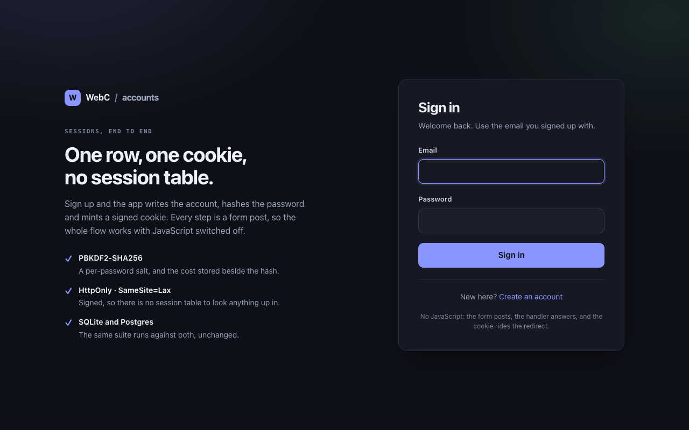

Accounts
Password auth, sessions, a middleware that knows who you are.

examples/accounts — screenshot taken from webc dev.webc.json
{
"name": "accounts",
"port": 8080,
"server": ["src/server.c"],
"shared": ["src/view.c"]
}src/accounts.h
// The accounts app's model, shared by the views and the routes.
#pragma once
#include <webc/shared.h>
WEBC_MODEL(Account, (id, i64, .pk = true),
(email, Text, .required = true, .format = "email", .unique = true),
(password_hash, Text, .required = true, .sensitive = true, .no_json = true),
(created_at, Text))
// What a login form carries. A struct of its own, because a form is not an Account:
// no id, no hash, and a password instead of one. INTERNAL says so to the schema check:
// this model is a request body, not a table nobody migrated.
WEBC_MODEL(Credentials, (email, Text, .required = true, .format = "email"),
(password, Text, .required = true, .min = 8, .format = "password"))
WEBC_MODEL_INTERNAL(Credentials)
Vec(Account)
// What the two auth pages are given. A struct, not a bare sentence, because a page that
// failed has more to say than "no": the field the sentence is about, and the email the
// reader typed, which a re-render must not throw away.
typedef struct AuthCtx {
Text error; // the sentence to show, "" when there is nothing to say
Text email; // what the reader typed, so a failed post does not empty the field
Text bad; // the field the sentence is about ("email", "password", "") for aria-invalid
} AuthCtx;
typedef struct MeCtx {
Account *account;
} MeCtx;
declare_view(Signin, AuthCtx);
declare_view(Signup, AuthCtx);
declare_view(Me, MeCtx);src/server.c
// The server half: signup, sign-in, a session cookie, and one page that needs it.
//
// curl -c jar -d 'email=a@example.com&password=hunter2hunter2' localhost:8080/signup
// curl -b jar localhost:8080/me
//
// No error is stored outside a response: what a failed post has to say is the context of
// the page it answers with, so two readers signing in at the same time cannot swap sentences
// and a reload cannot resurrect one.
#include <webc/server.h>
#include "accounts.h"
// One sentence for a wrong password and for an email nobody registered: telling them apart
// turns the form into an oracle for which addresses have accounts.
#define WRONG_CREDENTIALS "that email and password do not match"
GET("/") { return redirect("/me"); }
GET("/login") {
head_title("Sign in — accounts");
AuthCtx ctx = {0};
return page(Signin, &ctx);
}
GET("/signup") {
head_title("Create an account — accounts");
AuthCtx ctx = {0};
return page(Signup, &ctx);
}
GET("/me") {
i64 uid = auth_require_session(req, auth_secret());
if (!uid) return redirect("/login");
Account *me = db_get(Account, uid);
if (!me) return redirect("/login"); // a cookie for an account that is gone
head_title("Your account — accounts");
MeCtx ctx = {.account = me};
return page(Me, &ctx);
}
POST("/signup") {
Credentials in = {0}; // filled before it is validated, so a failed post can keep the email
head_title("Create an account — accounts");
if (!body_try(Credentials, &in)) {
AuthCtx ctx = {.error = body_error(), .email = in.email, .bad = body_error_field()};
return page_with(422, Signup, &ctx);
}
Account a = {.email = text_copy(in.email),
.password_hash = auth_hash(in.password),
.created_at = now()};
if (!db_try_save(Account, &a)) {
AuthCtx ctx = {.error = "that email is already registered", .email = in.email, .bad = "email"};
return page_with(409, Signup, &ctx);
}
Response res = redirect("/me");
auth_set_session(&res, auth_secret(), a.id);
return res;
}
POST("/login") {
Credentials in = {0};
head_title("Sign in — accounts");
if (!body_try(Credentials, &in)) {
AuthCtx ctx = {.error = body_error(), .email = in.email, .bad = body_error_field()};
return page_with(422, Signin, &ctx);
}
WQuery *qy = q("");
q_str(qy, "em", (str){in.email, strlen(in.email)});
Account *a = db_find(Account, "email = :em", qy);
if (!a || !auth_verify(a->password_hash, in.password)) {
AuthCtx ctx = {.error = WRONG_CREDENTIALS, .email = in.email};
return page_with(401, Signin, &ctx);
}
Response res = redirect("/me");
auth_set_session(&res, auth_secret(), a->id);
return res;
}
POST("/logout") {
Response res = redirect("/login");
auth_clear_session(&res);
return res;
}src/view.c
// The three pages. Markup only: the sentence a failed post produced arrives as a
// parameter, never as a global — two people signing in at once must not read each
// other's error, and a re-render must not forget what the reader typed.
#include "accounts.h"
// ---------------------------------------------------------------- the small parts
// What a field is, so the form is written as data and drawn once.
typedef struct Input {
const char *name; // the form field, the input's id and the label's `for`
Text label; // the words beside it
const char *type; // "email" · "password"
const char *autocomplete; // what a password manager is allowed to fill
Text value; // what the reader typed; "" on a first paint
const char *hint; // the rule, under the field; null for none
const char *minlength; // the browser's own copy of a length rule
bool focus; // the field a fresh page starts in
} Input;
// The model writes the sentence ("password: must be at least 8 characters") and this page
// shows it to a person: capitalised, and with a full stop. Nothing else is rewritten — the
// words are the model's, which is the whole point of validating with a declaration.
static bool filled(Text v) { return v && *v; }
static Text sentence(Text in) {
if (!in || !*in) return "";
size_t n = strlen(in);
char first = (in[0] >= 'a' && in[0] <= 'z') ? (char)(in[0] - ('a' - 'A')) : in[0];
char last = in[n - 1];
if (last == '.' || last == '!' || last == '?') return fmt("%c%s", first, in + 1);
return fmt("%c%s.", first, in + 1);
}
// "2026-11-13T07:42:48Z" -> "13 November 2026". The stored value is a timestamp; the page
// says what a reader asks for, which is the day they joined.
static Text long_date(Text iso) {
if (!iso || !*iso) return "";
str s = fmt_date_iso(iso, "%e %B %Y");
return s.p ? fmt("%.*s", (int)s.n, s.p) : "";
}
static Text initial(Text email) {
if (!email || !*email) return "?";
char c = email[0];
if (c >= 'a' && c <= 'z') c = (char)(c - ('a' - 'A'));
return fmt("%c", c);
}
static void brand_lockup(const char *where) {
el("a") { class_("brand"); href(where);
el("span") { class_("brand-mark"); attr("aria-hidden", "true"); text("W"); }
el("span") { class_("brand-word"); text("WebC"); }
el("span") { class_("brand-sep"); attr("aria-hidden", "true"); text("/"); }
el("span") { class_("brand-app"); text("accounts"); }
}
}
// The sentence a failed post produced, in one live region: it is announced when it appears,
// and the field it is about points at it with aria-describedby, so the two are one thing to a
// screen reader as well as to a pair of eyes.
static void error_line(Text error) {
if (!filled(error)) return;
el("p") { class_("error"); id_("form-error"); attr("role", "alert"); text("%s", sentence(error)); }
}
// One labelled field: `for` binds the label, `aria-describedby` binds the hint and the
// sentence above, and a field the post complained about says so with aria-invalid too.
static void input(const Input *in, bool bad) {
bool has_hint = in->hint && *in->hint;
el("div") { class_(bad ? "field bad" : "field");
el("label") { attr("for", in->name); text("%s", in->label); }
el("input") {
id_(in->name);
attr("name", in->name);
type_(in->type);
attr("autocomplete", in->autocomplete);
if (in->minlength) attr("minlength", in->minlength);
if (strcmp(in->type, "email") == 0) {
attr("inputmode", "email");
attr("autocapitalize", "none");
attr("spellcheck", "false");
}
if (filled(in->value)) value_(in->value);
if (in->focus) attr("autofocus", "");
required();
if (bad) attr("aria-invalid", "true");
if (bad && has_hint) attr("aria-describedby", fmt("%s-hint form-error", in->name));
else if (bad) attr("aria-describedby", "form-error");
else if (has_hint) attr("aria-describedby", fmt("%s-hint", in->name));
}
if (has_hint) el("p") { class_("hint"); id_fmt("%s-hint", in->name); text("%s", in->hint); }
}
}
static void fact(Text claim, Text detail) {
el("li") {
el("strong") { text("%s", claim); }
el("span") { text("%s", detail); }
}
}
// … 125 more lines in the repositorymigrations/0001_accounts.sql
create table if not exists accounts (
id integer primary key autoincrement,
email text not null unique,
password_hash text not null,
created_at text not null
);public/index.html
<!doctype html>
<html lang="en">
<head>
<meta charset="utf-8" />
<meta name="viewport" content="width=device-width, initial-scale=1" />
<title>Accounts — a WebC example</title>
<meta
name="description"
content="Sign up, sign in, and a page that needs a session: one model, a hashed password and a signed cookie."
/>
<link
rel="icon"
href="data:image/svg+xml,%3Csvg xmlns='http://www.w3.org/2000/svg' viewBox='0 0 32 32'%3E%3Crect width='32' height='32' rx='8' fill='%234b56e8'/%3E%3Cpath d='M8 10.5l4 11 4-8.5 4 8.5 4-11' fill='none' stroke='white' stroke-width='2.4' stroke-linecap='round' stroke-linejoin='round'/%3E%3C/svg%3E"
/>
<link rel="stylesheet" href="/public/style.css" />
</head>
<body>
<!-- res_page() drops the server-rendered view in here -->
<div id="root"></div>
</body>
</html>…and 2 more files in examples/accounts.